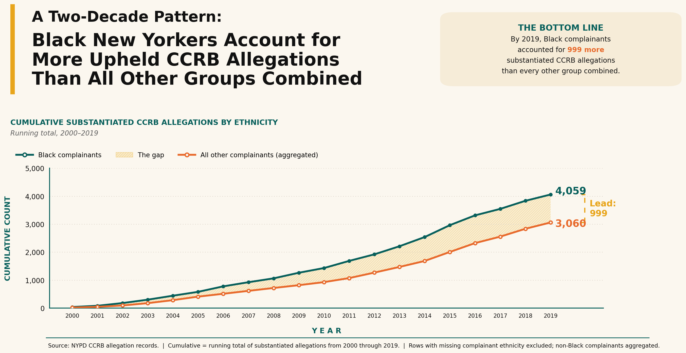

Proposition: Black complainants' reports of NYPD misconduct are substantiated at a lower rate than those of all other complainants
FOR the Proposition
Design Decisions and Rationale:
- We aggregated the complaints into substantiation rates by complainant race instead of showing raw counts. That makes the categories directly comparable and keeps the chart focused on the claim we are trying to support. We considered counts, but rates are more persuasive here because they account for different group sizes. Score: 1 (reasonably earnest)
- We sorted the bars from highest to lowest substantiation rate so the gap between groups is visible at a glance. That ordering makes the comparison easier to read and gives the chart a clearer argumentative structure. An alphabetical order would have felt more neutral, but it would also have buried the pattern we wanted readers to notice. Score: 2 (earnest)
- We labeled each bar with its exact percentage so readers do not have to estimate values from the axis. The labels make the message more immediate and help viewers verify the differences without extra effort. This worked well because the chart is compact enough that the labels still remain readable. Score: 2 (earnest)
- We gave the Black bar a different color from the rest so it stands out as the key case in the comparison. That helps direct attention to the group that most strongly supports the proposition. We kept the other bars in a single muted color so the chart does not become visually noisy. Score: -0.5 (somewhat deceptive)
- We truncated the Y-axis to span only the range 22%–40% instead of starting at zero, making the gap between Black complainants and other groups look far larger than the data would suggest. The 12% difference reads as dramatic, but falls short in that the bar labels still show exact percentages, so a careful reader can catch it. We considered a zero-baseline (honest but flat), a log scale (which would be strange for rates), and a binary "Black vs. all others" chart (loses per-group context and makes it easier to see deception due to the lack of clutter). Truncation won because it needs no data manipulation and is technically accurate, just visually misleading. Score: -1 (deceptive)
AGAINST the Proposition

Design Decisions and Rationale:
- The total substantiated complaints were aggregated into Black and non-Black groups. This reduces clutter and streamlines the visualization, making it easy to read for the viewer. It makes the difference between the two groups immediately clear but it hides the variation in substantiation between ethnic groups. Score: -1 (Somewhat Deceptive)
- We decided to focus specifically on the cumulative totals in substantiation rather than the substantiation rate. This creates a more persuasive visualization because cumulative total for substantiated complaints is higher for black complainants overall. However, it glosses over important nuances in the likelihood of substantiation. Score: -2 (Fully Deceptive)
- The y-axis starts at zero which preserves the scale of the data. We could have truncated the axis but it would distort the size of the gap between the two groups. Score: 1 (Earnest)
- A shaded area was added between the two lines on the visualization. We have considered using only the lines, but shading draws viewers attention towards the gap and the overall trend of the graph. Score: -0.5 (Slightly Deceptive)
Final Reflection
Designing the FOR visualization were relatively straightforward. Our persuasive choices was largely cosmetic, such as sorting the bars, highlighting Black complainants in a distinct color, and truncating the y-axis to 22 to 40 percent. The AGAINST visualization proved much more difficult. Substantiation rate does not support the opposing claim, so this led us to reframe the metric from a rate to a cumulative count of substantiated complaints. What surprised us the most was that the obvious deceptive techniques like truncated axes or selective color actually leave traces a careful reader can recover. Switching metrics, aggregating non-Black complainants into one category, and leaning on the title to frame comparison was both the least detectable and the most misleading. We now define ethical visualization less as adherence to a fixed set of forbidden techniques. The real question is whether a reasonable reader, trusting the chart, would arrive at conclusion the underlying data can genuinely support. By that standard our FOR chart sits at the edge of acceptable persuasion. Our AGAINST chart crosses into misleading territory, even though it appears more rigorous on the surface.